Studio Notes
Color, form, and visual experiments.
Many of these are master studies. Copying a painting stroke by stroke is the best way I know to see how it was built. The strip under each piece is its palette, pulled out of the image with k-means clustering (k = 5).
12 paintings
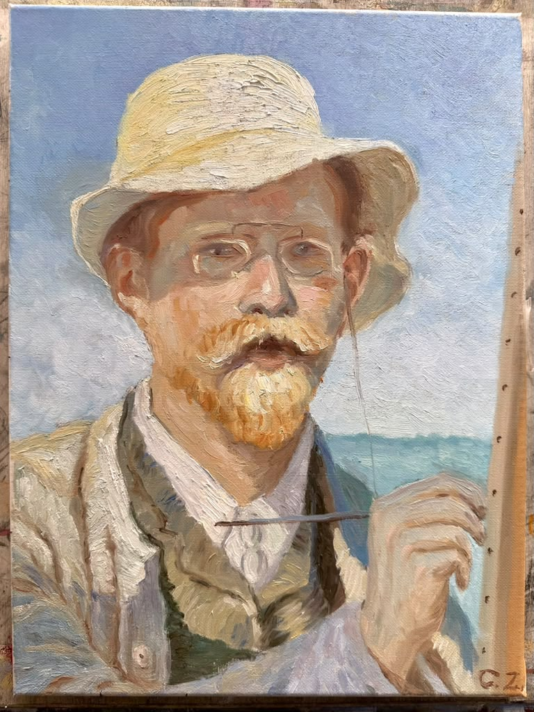
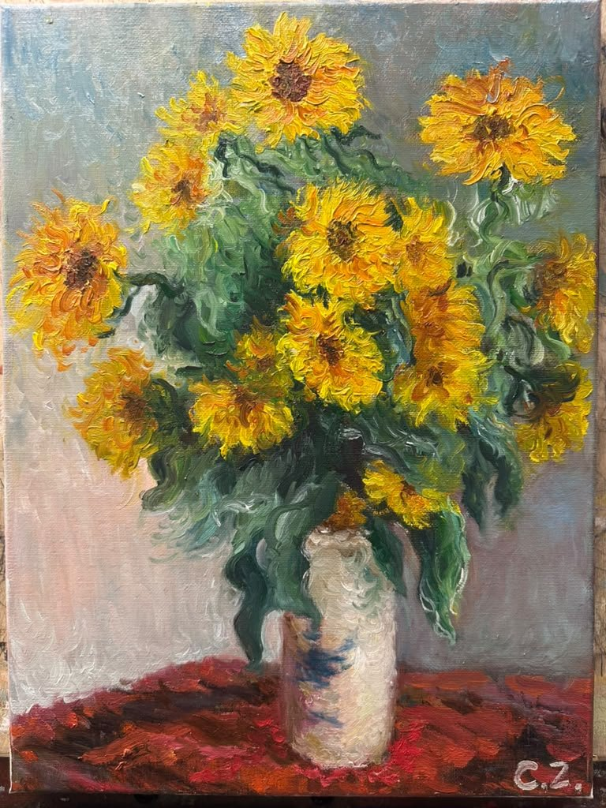
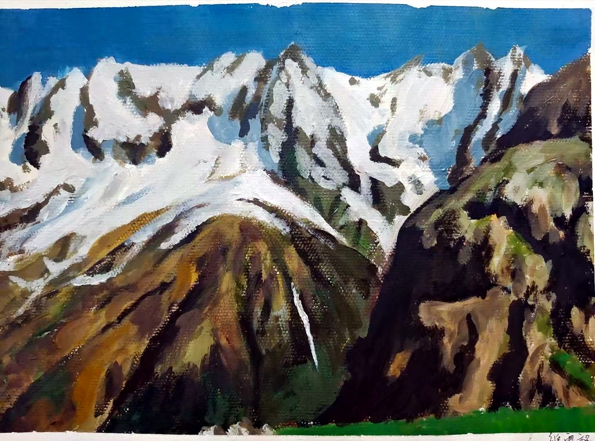
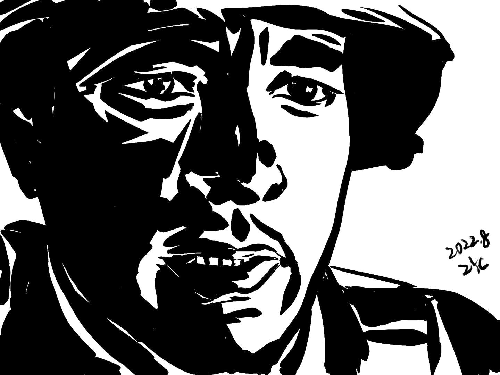
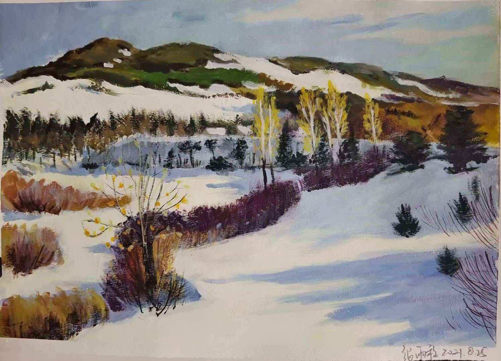
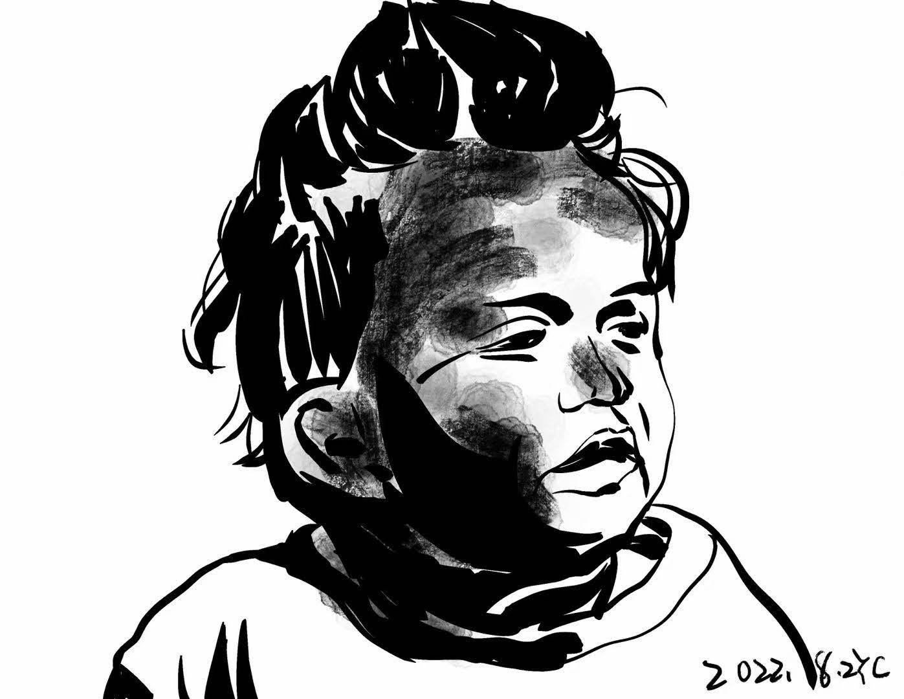
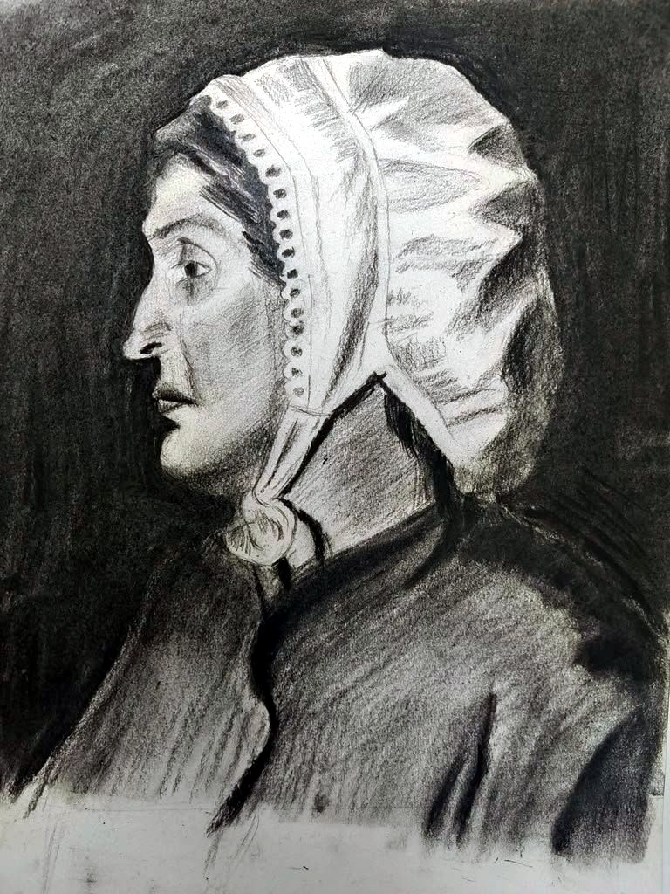
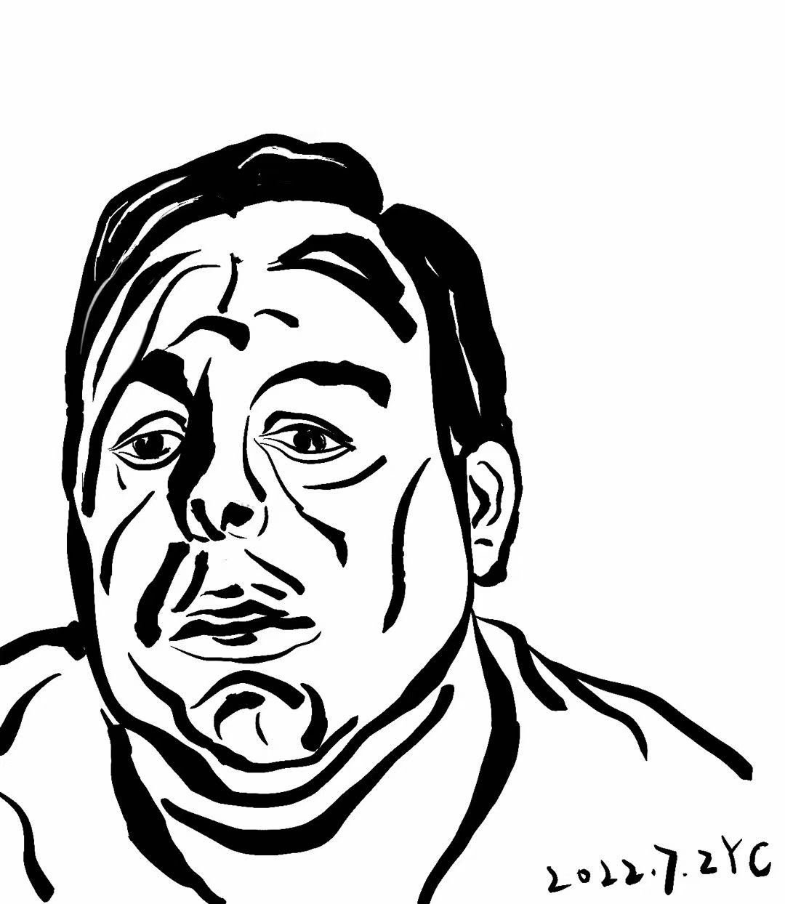
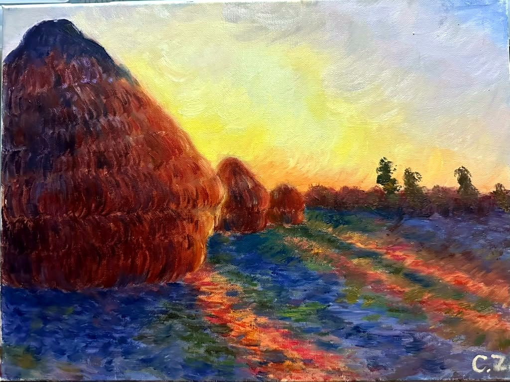
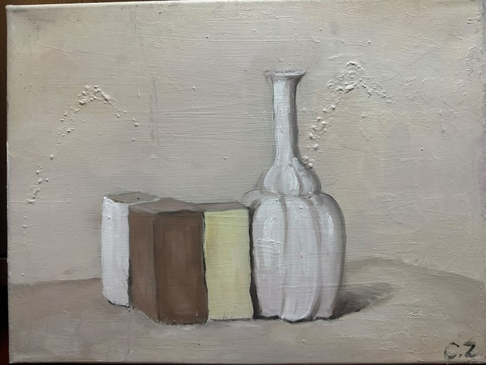
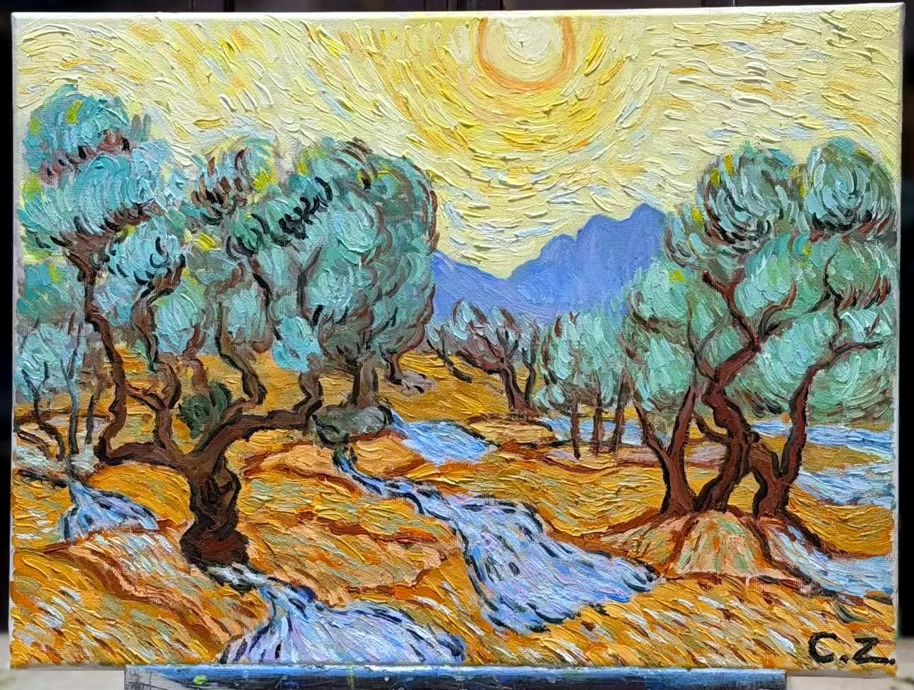
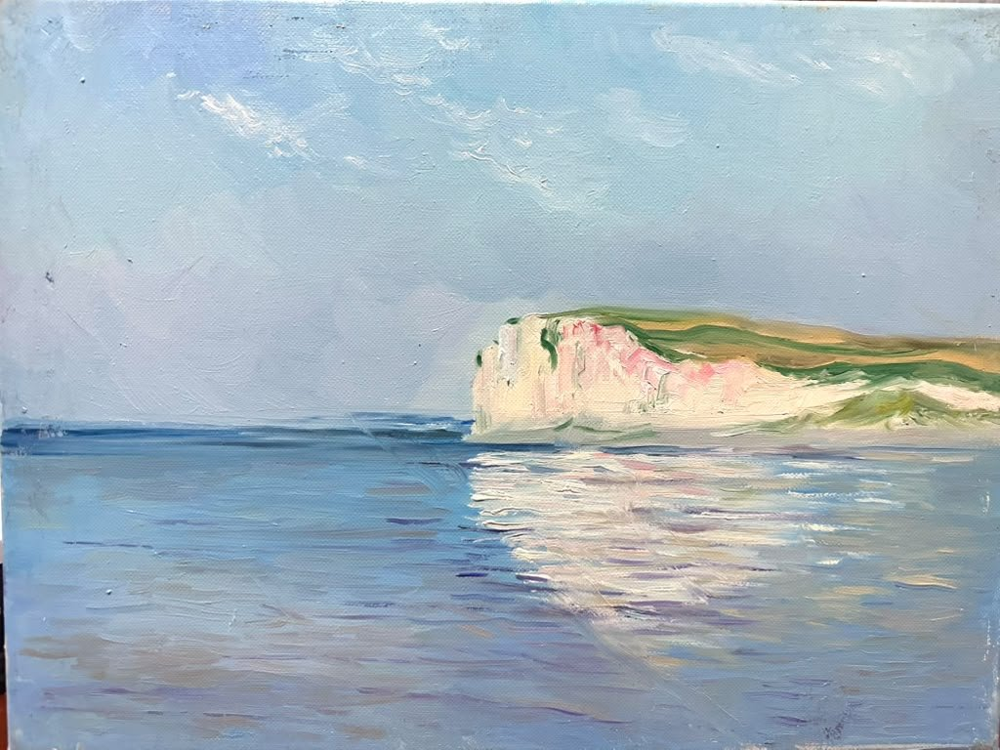